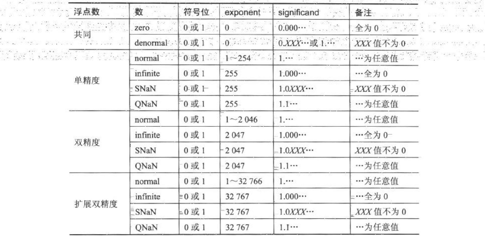
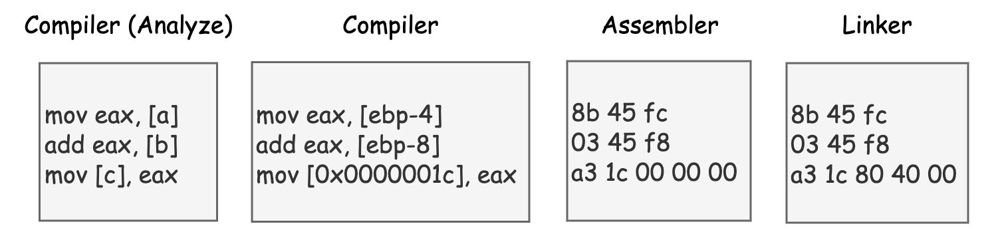

《X86/X64 体系探索及编程》读书笔记
又一本“砖头”，在 Intel 手册的基础之上讨论 X86/X64 处理器组成及相关编程方式的一本书。限于精力，有选择性地读一读吧
第一章、数与数据结构
- （Page：4）X86/X64 体系使用的是“小端序”，即：MSB 对应着存储器的高地址位，LSB 对应着存储器的低地址位。而在诸如 PowerPC 等 RISC 体系下的某些架构，则可能使用“大端序”。
global _main
section .data
msg: db "It's little-endian based!", 10
foo: dd 0
section .text
exit:
mov rax, 0x02000001
xor rdi, rdi
syscall
_main: ; entry here.
mov qword[rel foo], 1
test byte[rel foo], 1
jnz .succeed ; test whether it's little-endian.
call exit
.succeed:
mov rax, 0x02000004
mov rdi, 1
mov rsi, msg
mov rdx, 13
syscall
call exit- （Page：6）在 X86/X64 体系中，指令处理数据分为“基础（fundamental）”和“数值（numeric）”两大类。前者包括：byte（8 位）\ word（16 位）\ doubleword（32 位）\ quadword（64 位），它们代表指令能一次性处理的数据宽度。后者主要使用在运算类指令上，包括：
- 整数：包括 unsigned 与 signed 类型；
- 浮点数：包括单精度浮点（1/8/23）、双精度浮点（1/11/52）与扩展双精度浮点（1/15/64）；
- BCD（binary-code decmial integer）：包括 non-packed BCD 码与 packed BCD 码；
- SIMD：单指令多数据流；
- （Page：7）不存在 unsigned 浮点数（IEEE-754 有小数位）。
- （Page：7）在 X86 中，对整数的加减法运算（乘除会在具体指令上进行区分）不会识别 signed 与 unsigned 的区别。而是会同时根据两种情况下的运算结果来修改 eflags 的标志位（比如 OF 与 SF），具体如何解释则由上层程序负责。而 RISC 体系普遍会在指令层上进行假定运算（比如 add 与 addu，一个针对 signed，另一个针对 unsigned）。
- （Page：9）在单精度与双精度浮点数中，“尾数”部分有一个隐式的整数位，该位的值为固定的 “1”。在扩展双精度浮点数中，“尾数”有 64 位，“指数”有 15 位；且其中隐式的整数位是显式的，在 “normal（规格化）” 数中，这个位必须为 1，否则属于 “denormal（非规格化）” 数。
- 在规格化浮点数中，浮点数的尾数不应当包含前导 0。如果全部用十进制表示，对于类似 “0.0123” 的浮点数，规格化的表示应为 “1.23e-2”。但对于某些过小的数，如 “1.23e-130”，允许的阶数位数不能满足阶数大小的需要（下溢出），这时可能就会在尾数前添加前导 0，如将其表示为 “0.000123e-126”。
- （Page：10）“移码（biased notation）”用来解决浮点数使用 integer 方法进行比较时出现的问题，通过使用 unsigned 值来简化指数的比较过程。
- Biasing is done because exponents have to be signed values in order to be able to represent both tiny and huge values, but two’s complement, the usual representation for signed values, would make comparison harder.
- （Page：11）在 NASM 中使用浮点数字面量值，分别对应不同的编码方式（__float32__ / __float64__ / __float80e__）：
global _main
section .text
exit:
mov rax, 0x02000001
xor rdi, rdi
syscall
_main: ; entry here.
mov rax, __float32__(0.5)
call exit- （Page：11）IEEE-754 其他实数编码格式：

- denormal 数是一个极小的数，接近于 0。其指数部分为 0，尾数部分不为 0；
- 如果一个数超出 infinite，那就是一个 NaN 数。其分为两类：SNaN（Signaling NaN）与 QNaN（Quiet NaN）。前者表示一种比较严重的错误值，后者则通常可以接受（可能针对不同的异常）；
- 不再上述表格中的编码值均为 “unsupported 编码值”。
- （Page：17）IEEE-754 的四种舍入模式（用于在编码类型转换时舍入尾数部分）：
- round to nearest：四舍五入，且当有两个最接近的可表示的值时首选“偶数”值；
- round down：向负无穷大（向下）舍入；
- round up：向正无穷大（向上）舍入；
- round zero：向 0（截断）舍入。
- （Page：17）FPU（Float Point Unit）：浮点运算单元。在大多数现代通用计算机架构中，一个或多个浮点运算单元会被集成在 CPU 中。浮点数的计算也会采用独立的寄存器，比如 XMM 寄存器。
- （Page：17）浮点数中的溢出分为两种：
- 向上溢出：结果值超出了目标格式的最大 normal 值（即 finite 范围外）；
- 向下溢出：结果值超出了目标格式的最小 normal 值（即 tiny 值或 denornal 值）；
- （Page：20）在 BCD 码中，一个十进制数的每一位，使用 8 位的二进制进行编码，如 15 的 BCD 编码为 “15H”。而在 “packed BCD” 中，每个 BCD 数字使用 4 位来表示。X86 下可以使用
aaa指令来将累加器（AX）中的值转换为非压缩的 BCD 码。
第二章、X86/X64 编程基础
- （Page：24）C 语言不能直接转换为机器语言，要先由 C 编译器编译出汇编代码，然后再由汇编器生成机器指令，最终再由链接器将这些变量的地址定下来（符号重定向）。

- （Page：24）X86 机器是 CISC 体系，指令的长度不是固定的。其中最短的指令 1 字节，最长的指令 15 字节。
- （Page：26）C 语言中的 __stdcall 与 __cdecl 调用规范会使用栈来传递参数，而使用寄存器来传递参数能获得更高的效率。
（待更新）